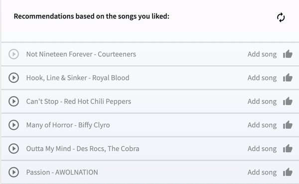

Please fill in the title and/or artist of a song that comes to mind in the search bar above
You can listen to a 30 seconds preview of a song by clicking on
. Unfortunately Spotify did not give us previews of all songs. If the play button is light gray
, you will be redirected to the Spotify Web Player. There, you will be able to listen to the song.
Please listen to both
a song in this application
a song in the Spotify Web Player
for some seconds to find out how it works and to see the next instruction.
Now choose at least two songs to add to the playlist by clicking on
Add song
Nice! You added a song to the group playlist.
In the right upper corner you can see which group members already logged in.
The color of the squares shows who liked the song. You can like the songs of others and change your mind by clicking on
again. Be aware that if you are the only one liking the song, disliking will remove the song from the playlist. Remove one song you selected from the list to unlock the next instruction.
You might have noticed that by adding a song, recommendations were generated.
For each song you like, three recommendations based on this song are added to the upper list.
If any group member, including you, likes a song,
everyone will get three more group recommendations in the lower list based on each group member's last liked song.
The refresh button
will replace all individual or group recommendations of the list by 10 new recommendations.
Try this out by clicking on it.
If
3
appears above the recommendations lists, some new recommendations have arrived.
By scrolling up, you'll see them and the notification circle will disappear:

The last thing you need to know before you receive your real user tasks,
is that the playlist will dynamically be ranked based on the probability that group members will like the songs.
In the end you can choose the number of top songs you would like to include in the final playlist.
Low-ranked songs will in this way not make it to the final playlist if the chosen number of top songs is smaller than the total number of selected songs.